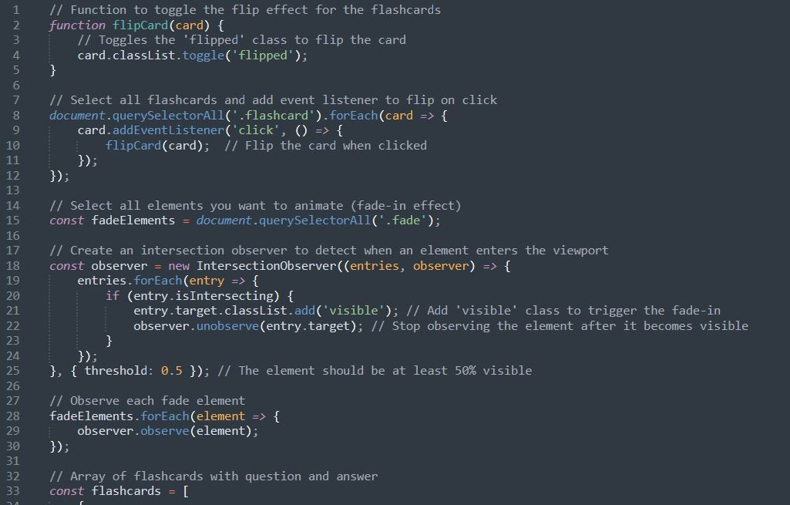

What is JavaScript?
JavaScript is a programming language that adds interactivity to websites. It allows you to change content on the page, respond to user actions like clicks or typing, and create dynamic features such as forms, pop-ups, or animations. With JavaScript, you can also validate user input, create interactive games, and build complex web applications. It runs directly in the user's browser, making websites faster and more responsive. By using JavaScript, you can make your website more interactive, engaging, and user-friendly!
Breaking Down JavaScript!

This image portrays some of the JavaScript we used to create the flashcards in the Revise section of this website and also the fade in effects you can see even on this page. With JavaScript you can make your website more interactive and fun, and even create games! Observe the way that comments are made in JavaScript, as these too are different from HTML or CSS comments.
JavaScript Cheat Sheet
JavaScript is more complex than HTML and CSS, so it may take time to understand, but don’t give up! Here's a quick overview: JavaScript selectors are used to select HTML elements so you can interact with them. Selectors can target elements like buttons, paragraphs, or divs in your HTML, modifying their properties. Events allow you to respond to actions like clicks or keypresses; they're used to trigger specific actions (functions) when something happens. Traversing is navigating through the DOM (Document Object Model) to find/interact with related elements. You can go up, down, or sideways in the DOM tree to find elements. Manipulation means changing the content or appearance of elements on a webpage. This can include modifying text, styles, attributes, or adding/removing elements.
This little cheatsheet goes into more of the vocabulary and the basics of JavaScript to give you a better understanding of the topic. But the best way to learn JavaScript is by actually doing it! So go on...make your website!